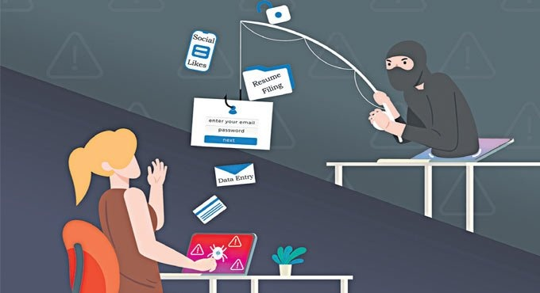
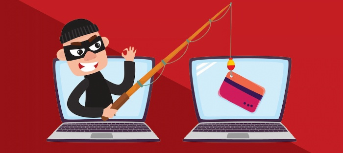

Phishing is the act of tricking someone into providing sensitive information such as passwords, credit card numbers, or other personal information. This is most often done via email, although you may often receive phishing messages on websites as well. Phishing can, for example, lead you on a merry chase for fake email logins, or it can lure you into downloading malware that steals your personal information.
Phishing scams are one of one of the most common types of cybercrime that hackers use to access a company's network. Cybercrime is exceedingly simple to practice, given the cost and potency of email phishing scams and the info acquired. Hackers have gotten better at predicting which businesses are most likely to fall prey to such scams, resulting in their collection of account information and personal data.
The change is due largely to users reusing their usernames and passwords, instead of creating a new one. Mostly stolen from a password reuse attack. It is estimated that about 73 percent of online accounts are protected by reused passwords. By reusing such data, the likelihood of getting access is much higher for hackers.

Phishing attacks are becoming more sophisticated with the development of social media sites used for customer assistance offered by banks and large corporations. Uintier phishing takes advantage of social media to establish profiles of fake companies that look similar to pages belonging to real customer service companies. The user is redirected to a phishing site for which an account is required if a user leaves a comment. If they follow the specified instructions, the person who made the post gains access to their personal data.
Training your teams on the best ways to mitigate the risks of scams.

Hackers use phishing emails to request donations from individuals and organizations in order to invoke feelings of generosity from them. Train your staff that they frequently send urgent and don't verify emails to frighten the recipients and make them hand over their money. Your employees should not rely only on their emotions to recognize emotionally exploitative emails.
Phishing is becoming increasingly difficult to prevent as it adopts new strategies and techniques. Conducting random internal phishing tests in order to gauge your employees' susceptibility to phishing attacks is an effective method to understand cybersecurity vulnerabilities. When employees participate in security awareness programs and attend events on the subject, you cultivate their defenses against cybercrimes.
You can avoid your employees from being fooled by phishing scams by taking advantage of measures such as setting clear objectives, examining vulnerable spots, and establishing metrics. These are straightforward measures that you can use to aid in the safety of your company.
In conclusion, while phishing attacks have become more common with the increase of online fraud, users should be wary of clicking on links in emails from unknown senders. Phishing attacks are attempts to obtain sensitive information such as usernames, passwords and credit card details, often for malicious reasons.